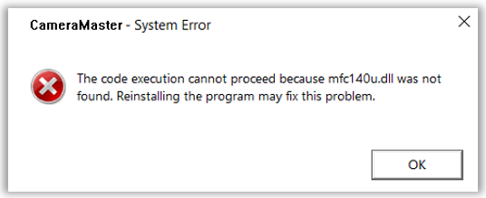
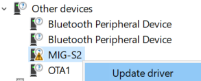
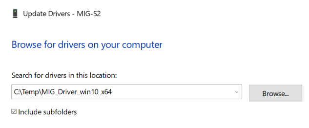
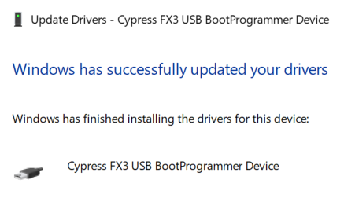
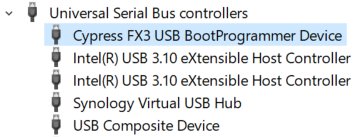
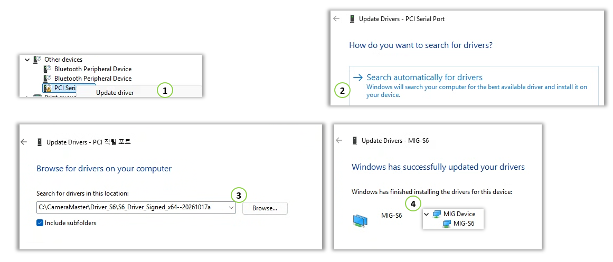

On this page
Driver Installation
Check the model label before selecting a package. See Downloads for the available package names and platform labels.
Package names below identify Windows 10 x64 (S2) and Windows 11 x64 (S6). Compatibility with other operating systems or board revisions must be confirmed with support.
Before installation
- Record your board model, hardware revision and Windows version/architecture.
- Install the required Visual C++ runtime, then follow the instructions for your model.
- Check Device Manager for the board and any warning symbols after installation.
- Open CameraMaster and check the grabber connection status.
If installation fails, record the Device Manager error code and follow Troubleshooting.
Visual C++ Redistributable for Visual Studio 2015~2022
Install “Visual C++ Redistributable for Visual Studio 2015~2022”

MIG-S2 Driver Installation
Install the MIG_Driver_win10_x64 package
Install the MIG_Driver_Signed_win10_x64 package




MIG-S3 Driver Installation
The MIG-S3 installation package and verified steps are not yet published here. Contact technical support with the board revision and OS details to obtain the appropriate instructions. Do not substitute the S2 or S6 package without confirmation.
MIG-S6 Driver Installation
Install the S6_Driver_Signed_win11_x64 package

Need help? Troubleshooting · Contact technical support